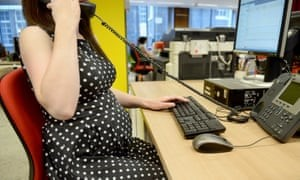

I was forced out of my job after having a baby. Then I was silenced by an NDA.
For a lot of women, finding out you are pregnant opens up an array of questions. Will the baby be a boy or girl? Will everything go smoothly with the pregnancy?
Sadly, another question that often pops up amid the excitement is: how will my employer take the news that I am expecting a baby? Pregnancy discrimination is a huge problem in the UK, with around three-quarters of pregnant women experiencing some form of disadvantage at work. In a survey for the Equality and Human Rights Commission, one in nine mothers reported that they were either dismissed, made compulsorily redundant or treated so poorly they felt they had to leave their jobs - that’s the equivalent of 54,000 new mothers a year. Yesterday, a new report from MPs highlighted evidence that some companies are pressurising women to sign non-disclosure agreements in order to cover up this unlawful behaviour and discrimination.
I was one of those 54,000 women. I had been a victim of pregnancy and maternity discrimination in a previous job. I had worked for the company for several years and never had any issues. And then I became pregnant.
As soon as I announced my pregnancy, the atmosphere at work changed from being friendly to hostile and cold. Luckily, I already knew about rights during pregnancy as this was not my first child and I had previously worked in a human resources role. Yet despite knowing my rights and what I was entitled to, with the workplace suddenly so unfriendly, I was made to feel like an inconvenience.
I tried to arrange all of my appointments around my working hours to cause as little disruption as possible. While on leave, I was not informed about or invited to any company events, including team-building holidays and trainings. My “keeping in touch” days, which were scheduled months in advance, were cancelled despite having been organised around training dates for a new project. This meant that when I did return, I was already at a disadvantage compared to my colleagues. All of this made my maternity leave and impending return to work extremely stressful.
On my return to work, I had to fight for basic rights such as accrued holidays and bank holidays. When I asked to take parental leave to settle my child into new childcare arrangements, this was frowned upon.
Around six months after my return to work, I was told that my role was vulnerable to redundancy. I was stunned and I questioned their decision. The business was growing and I could see that there was a need for more people to do the job I was doing. We were managing an ever-growing number of clients; how could there be no need for my job? Later I was called in to the office and offered a settlement agreement, asked to think about the offer, and to leave the building.
Once I had the chance to read through the paperwork I realised I was being asked to sign an NDA. The terms of this agreement meant I was unable to name the company in conjunction with the discrimination I had faced. I did not like the thought of being silenced. Not only was I being treated unfairly but I was also being forced to mute my experiences.
But there were still fees to pay back then to bring a case to employment tribunal. This seriously affected my decision on whether to sign. I was a single parent, I had young children, with no assurance that I would be able to find another job soon. I did not have the resources needed to tackle the discrimination I was facing.
After seeking advice from the charity Maternity Action and from the Advisory, Conciliation and Arbitration Service (Acas), I decided that it would probably be in my and my children’s best interests to sign the NDA. I could not face a long and arduous battle that would not only cost me money but time and distress.
My settlement was substantial enough to deter me from bringing a tribunal claim against my employers. I would not have agreed to sign if the payment could not cover the amount of time I needed to regroup so that I could rejoin the work force.
I believe that better protections for mothers returning from maternity leave would prevent issues like this from arising so often. There are protections from redundancy during maternity leave, which is why many employers wait until someone has returned and the protection has ended. Extending that period would protect women at a very vulnerable time of their lives when they need to provide for their babies by returning to work.
Pregnancy and maternity discrimination feels so isolating and limiting. However, since my experience, I have met many women with stories similar to mine across various industries and pay grades. It’s an epidemic that affects countless women.